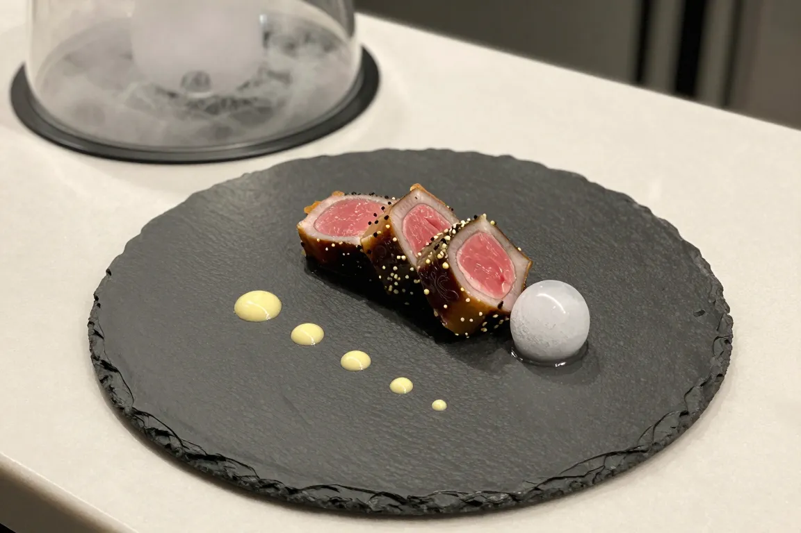

Кухня, которая готовит по измерениям и показывает, как это работает. Шеститомник Modernist Cuisine 2011 года изложил физику су-вида, давления, гелей и заморозки. Грант Ахатц в чикагском Alinea превратил метод в дегустационное меню.

Главная идея
Повар, знающий физику тепла, воды и текстуры, может управлять результатом с точностью до градуса, секунды и грамма и затем делать еду, прежде невозможную.
Принципы дизайна
Измеряйте температуру и время каждого блюда и записывайте оба в рецепте.
Готовьте в запаянном пакете на водяной бане, чтобы весь кусок достиг одной точной температуры в центре.
Берите лабораторный инструмент, когда он даёт результат лучше инструмента старой кухни: центрифугу, скороварку, вакуум.
Показывайте внутренность: режьте еду пополам и фотографируйте, чтобы гость и читатель видели структуру.
Стройте блюдо как последовательность чувств: запах, звук, температура и осязание наравне со вкусом.
Делитесь методом в книге, чтобы любой повар мог его проверить.
Подавайте длинное меню из точных малых перемен в зале, похожем на театр.
Антипаттерны
Время или температура, которые повар лишь угадывает
Деревенская неровная тарелка
Рецепт, который остаётся секретом
Техника как фокус, без выигрыша во вкусе или текстуре
Тяжёлый соус, скрывающий точную готовку главного куска